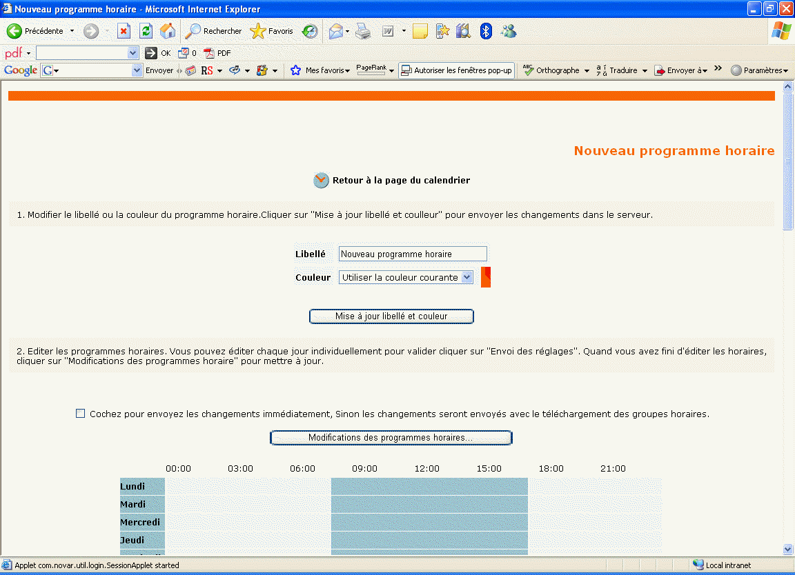

et en cliquant ensuite sur Envoyer
les réglages.
et en cliquant ensuite sur Envoyer
les réglages.Un modèle de temps d'occupation correspondant à un jour particulier peut être mis à disposition en ajoutant des modèles de jours.
Pour ajouter un modèle de jour spécial :
1 accédez au 963 Server comme indiqué dans la section « Connexion au 963 Server » de ce manuel ;
2 affichez la page dans laquelle se trouve le bouton permettant l'accès au groupe de zones horaires et cliquez sur ce bouton.
Ou :
cliquez sur Calendrier. Une fenêtre supplémentaire s'ouvre avec les groupes de zones horaires ou les dossiers contenant les groupes de zones horaires. Cliquez sur le groupe de zones horaires concerné pour le sélectionner. Si ce groupe de zones horaires n’apparaît pas, cliquez sur le dossier requis pour l'atteindre. Pour revenir au dossier précédent (parent), cliquez sur Remonter d’un niveau.
Après avoir sélectionné le groupe de zones horaires, une page comportant la liste des zones horaires auxquelles il est connecté s’affiche et vous donne accès aux modèles d'horaires exceptionnels et aux exceptions ;
3 cliquez sur Cliquer ici pour atteindre la programmation horaire de ce groupe ;
4 cliquez sur Nouveau jour spécial. Une boîte de dialogue semblable à celle présentée ci-dessous s'affiche :

5 saisissez le nom du modèle dans la zone Libellé ;
6 dans la zone Couleur, cliquez sur la couleur utilisée pour représenter les jours correspondant à ces horaires ;
7 cliquez sur Mettre à jour le libellé et la couleur ;
8 dans les zones des colonnes Début et Fin, saisissez l'heure de début ou de fin correspondant à chaque période.
En ce qui concerne les contrôleurs IQ3, il est possible
d’ajouter des périodes en cochant la case de la colonne Nouvelle,
puis de saisir les heures de début et de fin correspondantes dans les
zones des colonnes Début et Fin ; cliquez ensuite sur Envoyer les réglages. Il est possible
d'enlever des périodes inutiles en cochant la case située à côté de et en cliquant ensuite sur Envoyer
les réglages.
Pour les anciennes versions de contrôleurs IQ3, indiquez les horaires de début et de fin de chaque période dans les zones Début et Fin. En cas de non utilisation d’une période, indiquez 24:00 dans ces deux zones ;
9 cliquez sur Envoyer les réglages.
10 pour envoyer les modifications immédiatement au contrôleur, cliquez dans la case Cocher ici pour envoyer immédiatement les modifications au contrôleur ; sinon, les modifications seront envoyées au moment du téléchargement du groupe ;
11 une fois les temps d'exploitation correctement configurés, cliquez sur Procéder aux ajustements de programmation horaire.